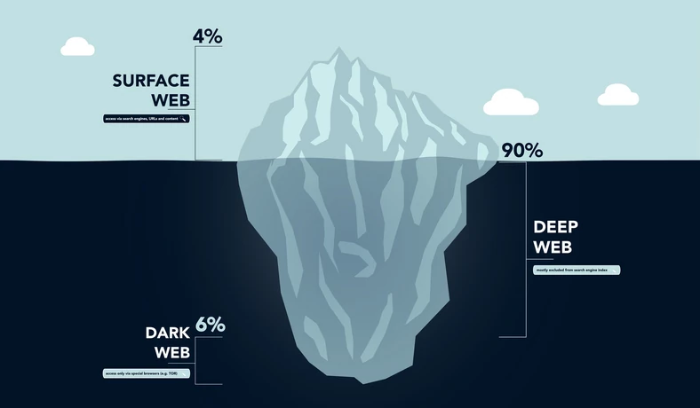

1 / 11
Poradnik jak sprzedawać narkotyki w sieci
Maciej Czarnota, Mateusz Krawczyk
Maciej Czarnota, Mateusz Krawczyk
2 / 11
Poruszając się po internecie, widzimy tylko jego mały fragment. Przed
naszym wzrokiem skrywa się bowiem jeszcze tzw. głęboka sieć (deep web)
- ogromna siatka przepływających po niej informacji Jeszcze głębszą
częścią deep webu jest z kolei Dark Web - zdecydowanie najbardziej
mroczny zakątek globalnej sieci informacji. Korzystają z niego
złodzieje, oszuści, handlarze narkotyków i broni, terroryści oraz cała
masa innych przestępców czerpiących profity z zapewnianej przez niego
anonimowości.Tego zakątku nie obejmują żadne regulacje
3 / 11

Wejście do dark webu jest bardzo łatwe, choć wymaga specjalnej
przeglądarki internetowej. Zdecydowanie najbardziej popularnym
narzędziem do tego celu jest przeglądarka Tor pozwalająca na anonimowe
przeglądanie codziennego internetu, a także dostęp do dark webu.Warto
też pamiętać, że Tor nie jednak jedyną aplikacją, która pozwala na
wejście do dark webu. Możecie także skorzystać z następujących
programów: Matrix Globus Secure Browser Comodo Ice Dragon FreeNet
4 / 11

strony w dark webie nie mają klasycznego adresu w stylu
www.Facebook.com - korzystając z Tora adres poszczególnych stron to
losowy ciąg znaków z końcówką .onion, np.
http://fhisqafhsuiosfsafhb00x.onion/. Po drugie, sama idea dark webu,
chroniącego naszą prywatność i niejako ukrywania jego zawartości,
oznacza, iż adresy dostępnych tu stron znajdziemy głównie w różnych,
ręcznie edytowanych katalogach oraz od innych osób serfujących po dark
webie.
5 / 11
Najbardziej znanym katalogiem darkwebowych stron jest zdecydowanie The
Hidden Wiki - "zły" brat Wikipedii zawierający odnośniki do wielu
innych stron i katalogów, które zabiorą was jeszcze głębiej w mroczne
zakątki sieci. Niestety to, że The Hidden Wiki jest najbardziej znane,
nie oznacza automatycznie, że jest to najlepsze źródło linków w dark
webie. Znajdziecie tam bowiem odnośniki do nielegalnych oraz
niebezpiecznych stron, czy też do serwisów, które już po prostu nie
działają. Z pomocą przyjdą wam również wyszukiwarki operujące w dark
webie - choć nie spodziewajcie się tu równie rozbudowanych wyników
wyszukiwania, co w przypadku Google.
6 / 11
VPN to Wirtualna Sieć Prywatna (ang. Virtual Private Network), która
chroni połączenie internetowe za pomocą szyfrowania całego ruchu
internetowego i zwiększa prywatność w Sieci dzięki ukryciu adresu IP i
zmianie wirtualnej lokalizacji.
7 / 11
Poprzez szyfrowanie ruchu internetowego VPN zapewnia bezpieczeństwo
połączenia. Nikt nie jest wtedy w stanie „podsłuchać” czy zmodyfikować
ruchu sieciowego. Dodatkowe usługi oferowane przez niektórych
dostawców VPN, taki jak blokada złośliwego oprogramowania, podwójne
połączenie VPN czy Kill Switch rozłączający nas w przypadku problemów
z internetem pozwalają na znaczne zwiększenie poziomu bezpieczeństwa
podczas korzystania z sieci.
8 / 11
Zmiana adresu IP i – jeśli chcemy – lokalizacji, pozwala nam zachować
anonimowość podczas surfowania w sieci, co znacznie zwiększa naszą
prywatność. Dodatkowo w każdej chwili można zmienić tożsamość i serwer
VPN, z którym się łączymy, zmieniając przy okazji adres IP. Z serwerów
polecanych dostawać VPN korzysta wiele osób jednocześnie, a sam
dostawca oferuje wiele serwerów. Dzięki temu stajemy się anonimowi „w
tłumie” co uniemożliwia wyśledzenie nas. Do najlepszych vpn naleza
NordVPN, Surfshark, pure, atlas.
9 / 11
Maszyna wirtualna nie różni się niczym od każdego innego komputera
fizycznego, takiego jak laptop, smartfon lub serwer. Ma procesor CPU,
pamięć, dyski do przechowywania plików i jeśli jest to konieczne, może
połączyć się z Internetem. Chociaż części tworzące komputer (nazywane
sprzętem) są fizyczne i materialne, maszyny wirtualne często są
traktowane jako komputery wirtualne lub komputery zdefiniowane
programowo w ramach serwerów fizycznych, istniejących tylko jako kod.
10 / 11
Korzyści związane z zabezpieczeniami — ponieważ maszyny wirtualne
działają w wielu systemach operacyjnych, przy użyciu systemu
operacyjnego gościa na maszynie wirtualnej można uruchamiać aplikacje
z wątpliwymi zabezpieczeniami i chronić system operacyjny hosta.
11 / 11
Przygotowywane przez Maciej Czarnota, Mateusz Krawczyk